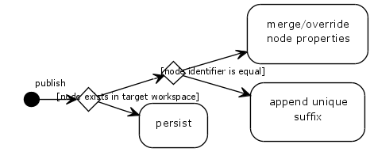

Bug #58428
Set Unique Name if Exists in Structure
| Status: | Resolved | Start date: | 2014-05-02 | |
|---|---|---|---|---|
| Priority: | Should have | Due date: | ||
| Assigned To: | - | % Done: | 0% |
|
| Category: | Node handling | |||
| Target version: | - |
Description
copy or moving a node currently counts up the name with appending '-'.n
If two users copying the same image f.e. on the same page, and the image has the nodename "node1239",
both copied nodenames are "node1239-1", in both workspaces.
user 1 puplishing ... anything is fine.
user 2 publishing after user 1 gets an exception that node1239-1 already exists.
he cant edit the nodename on normal content nodes. he does not know anything about the nodename and also can not
locate the node to delete it.
{kind=link}
Associated revisions
[TASK] Method to find if a given path exists anywhere in the CR
Change-Id: Ia3ca4c318c1c5bb9ea9517ba3a2cad681864c842
Related: #58428
Releases: master, 1.1
Reviewed-on: https://review.typo3.org/30818
Reviewed-by: Christian Mueller
Tested-by: Christian Mueller
[TASK] Method to find if a given path exists anywhere in the CR
Change-Id: Ia3ca4c318c1c5bb9ea9517ba3a2cad681864c842
Related: #58428
Releases: master, 1.1
Reviewed-on: https://review.typo3.org/30828
Reviewed-by: Christian Mueller
Tested-by: Christian Mueller
History
#1 Updated by Bastian Waidelich over 1 year ago
- Category set to Node handling
Carsten Bleicker wrote:
copy or moving a node currently counts up the name with appending '-'.n
This happens in the Service\NodeController of the TYPO3.Neos package by the way.
I can approve the issue by reading the code:
Apart from the fact that this kind of logic should definitely go into TYPO3CR, just adding a counter won't work with reliably with multiple workspaces:
In the long term we want to provide some semi-automatic conflict solving when publishing nodes, but this is a major task..
A simpler approach for the meantime could be, to chose a unique suffix over all workspaces.
#2 Updated by Bastian Waidelich over 1 year ago
...some more thoughts:
Better than the suggestion from above would be to ensure uniqueness upon publish not on copy:

#3 Updated by Bastian Waidelich over 1 year ago
- File persist_acitivy.png added
#4 Updated by Christian Müller about 1 year ago
- Status changed from New to Accepted
We should discuss a strategy for handling this and implement it.
#5 Updated by Gerrit Code Review about 1 year ago
- Status changed from Accepted to Under Review
Patch set 4 for branch master of project Packages/TYPO3.Neos has been pushed to the review server.
It is available at https://review.typo3.org/30816
#6 Updated by Gerrit Code Review about 1 year ago
Patch set 1 for branch 1.1 of project Packages/TYPO3.Neos has been pushed to the review server.
It is available at https://review.typo3.org/30829
#7 Updated by Christian Müller about 1 year ago
- Status changed from Under Review to Resolved